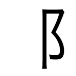

LEARNING YOUR KANJI RADICALS
(3-STROKES)
“I never dared be a radical when young, for fear it would make me a conservative when old” – Robert Frost
You’ve gone through radicals with 1 and 2 strokes. Sorry, but that was the easy part. Now we’ll be learning radicals with 3 strokes. There are a lot of them, and they will get more complicated (duh). Still, now’s the time where we can start using 1 and 2-stroke radicals to create the 3-stroke ones, so it won’t be as hard as you think. You’ll also be able to use lists on Smart.fm I’ve created to help you solidify the radical knowledge you pick up here.
If you’re ready to get started, feel free to jump right in and start learning the 3-stroke radicals. The sooner we get radicals out of the way, the quicker we can move on to the “real” kanji.
3-STROKE RADICALS

Really Sweet Water Slide: See the drop of liquid at the top? That’s the water that will help propel you down this monster slide. The slide is so big that there’s even an reinforcement holding it up (in the bottom left).

Mouth: For our intents and purposes, whenever you see a box (remember, there are no circles in kanji!) think of it as a mouth. You’ll see this one a lot. Square = box, square = box.
Ground: See the cross sticking into the ground? That’s where people are buried. Take note that the ground is bigger than the width of the cross, this is important!

Samurai: This one looks just like “ground,” right? The only difference is that the cross width is wider than the ground. That’s because samurai get bigger crosses, because everyone thinks they’re so cool.

Winter: Do you remember stool? This is just a stool with a slide on it. When things are frozen, and cold, you slide right off them (in this case you’re sliding off a stool). When is it cold? During the winter. You slide off your stool in the winter because it’s frozen.
Evening: See the enclosure? It’s holding on to a drop of water. The evening/night air encloses the water and holds on to it until the sun comes up.

Big / Large: Tell me this doesn’t look like a big dude?

Woman / Female: This radical looks like two stacked X’s. In chromosomes, XY = male, XX = female. So just remember that XX = woman!
Child: You could try to do the following, though I think this is another one you’ll just have to remember: There’s a barb that’s being stabbed through by a one. On top, there’s something that kind of looks like a wide “7,” holding the barb down while it’s getting stabbed. Yeah, I know, not much to work from, so it might be easier just to learn it straight up.
Fancy Pot Lid: Do you remember the lid from before? It didn’t have the amazing gripping power that this one does. The sides go around the pot and really hold it on there for better cooking, etc.

Measurement: You’re living in the desert, and it’s the future, which means finding water is difficult. You can trade one barb for one drop of water. See the “1″ going through the barb? This equals one drop (on the left) of water. Hopefully you have enough barbs to quench your thirst.

Little: There’s a little barb between those two fish feet. Would you mind helping that fish (with legs) getting it out?

Unicorn With Horns: I bet you can see the unicorn horn in the middle of those two horns, right? Usually unicorns are horses, but in this case, we have a bull with a third, unicorn horn.

Deranged Big Guy: I bet you remember the “big dude” from earlier (大). This one looks similar, but it’s a little bit… off. Right? That’s why this is the Deranged Big Guy. If you look closely, you’ll see that he’s wearing a kettle/pot lid on his head (weirdo!), and has two normal legs (at least something is normal, right?).

Flag: If this doesn’t look like a flag, I don’t know what doesn’t. The wind is blowing towards you, and as usual, you’re standing facing the Pacific Ocean from Western United States (that’s why the flag blows from left to right).
Left-hand: Unfortunately, being left-handed was a bad thing to be back in the day in Japan (and still a little bit now!). That’s why left hands are depicted so weirdly! Only three fingers (because being left handed is only 3/5ths as good as being right handed), and the middle finger is up higher because… well… this left handed person is a bit angry.
Mountain: This one kind of looks like a mountain, right? It’s also part of “left hand,” which is why being left handed is a mountain of distress for those who are left handed.
River: This one looks like a river, I think. It even widens at the end as if it’s the mouth of the river. There’s also a line in the middle showing the movement of the water!

River Bend: Same three lines as a river, but this time it’s bending. That’s why it’s a river bend.

Construction: Do you know those big iron girders they use to make big things when constructing something. This looks like the end of one of those, which is why this is construction.
Snake Skull: This one just looks like a snake’s skull, right?
Hanging Towel: This is a hanging towel. The middle line (stick) is the bar holding the towel, and the upside down box is the towel. Really, this is a simple combination of stick and upside down box.

Dry: Before, we had a stick holding up a hanging towel. Now we have a stick with two horizontal racks on it. With two sticks, any towel is bound to become dry in no time.

Pile of My Stuff: Do you see the “I/me” in there? Now just add a little more on top, and you have a pile (or my stuff).

Man On Cliff: You probably remember the cliff itself, but now there’s a man standing on it, looking out into the ocean.
Big Step / Stride: This one kind of looks like the description associated with it, but it might end up being something you’ll just have to learn straight up. There’s a big leg going off to the right, and you can think of it taking “3″ (see the big 3?) big steps somewhere.

Twenty: There are two “tens” in here (see them side by side?) When combined, as they are now, you have 10+10 = 20. Therefor, this one is twenty.

Ceremony: If you look at this one, it looks like a guy with one leg and a “drop of liquid” (i.e. he had quite a few drinks). This was a fun ceremony, apparently.
Busted up stick: Broken in three places!

Double Knocked Over Boxes: This set of two boxes was knocked over. Oh shame. Since there was more weight involved, they got broken too (which is why they fell to the left, because broken boxes fall to the left).

Stuck Ninja Star: This ninja star got stuck in the ground. Aw shucks.

Hair: I dare you to tell me this doesn’t look like hair.

Linger / Loiter: See the “important person” in there? That important person has a slide above their head, which means they’re waiting to go up the stairs and slide down it. Even important people have to wait in line to ride down a slide like this.

Fish Legs Stick: This is a stick with fish legs attached to it.

Spiky Stick: See the spikes coming out of that stick. Wait a sec, that’s not even a stick, that’s a barb. Dang that stick is spiky in every way possible.
Liquid: We have water / ice in there, plus another drop of liquid. Once you get to that point, you’re really talking about a lot of liquid, of some kind.
Animal: This animal tail has hairs coming off of it.

Grass: See the grass coming up from the ground? Also, do you see the roots going down into the ground? This is grass, ya’all.

Butcher: B is for Butcher.

Alligator Skull: Similar shape to the snake skull, but this one has more teeth. That’s why it’s an alligator skull.

Death: When a pot (with a pot lid) explodes while you’re cooking it, there’s a good chance you might die.
Reinforced Stairs: This is a lot like the stairs we looked at earlier – this time, though, they’re reinforced. See the reinforcement beam?

Reinforced Enclosure: Do you see the enclosure? It’s just like that, but now we’re going to reinforce it with another beam, so it can enclose even more difficult things!
Before You Move On:
- Learn 3-Stroke Radicals – highly recommend drilling them using the 3-stroke radical list. *In Smart.fm, apparently image based flash cards don’t work too well in the “iKnow” version of their flashcards. Use the “Drill” program instead, and it should work just fine.